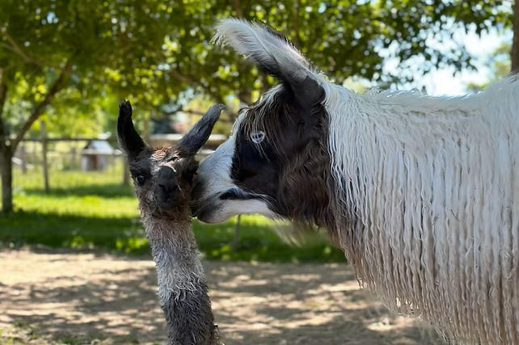

Who We Are
The North West Camelid Foundation is a nonprofit organization dedicated to advancing the health and well-being of llamas and alpacas through veterinary research, education, and scholarship.
We fund veterinary research grants at Oregon State University and Washington State University, award annual scholarships to veterinary students focused on camelid medicine, and host educational events for owners across the Pacific Northwest.

Founded in 1987
The North West Camelid Foundation was founded in 1987 by a group of camelid breeders and enthusiasts in the Pacific Northwest who recognized that llamas and alpacas needed greater veterinary attention and scientific study. What began as a grassroots fundraising effort has grown into a sustained partnership with two of the region's leading veterinary colleges.
Over more than three decades, the Foundation has funded studies touching on infectious disease, immunology, reproduction, nutrition, and more. Our partnership with OSU's Carlson College of Veterinary Medicine has helped build that institution's well-earned reputation as a national center for camelid research and education.

"Regardless of the size of their herd or the location of their barn, every camelid and every owner benefits from the research funded by the NWCF."
— North West Camelid FoundationWhere Your Donations Go
The Foundation is governed by a volunteer Board of Directors and supported by a Research Committee made up of experienced camelid breeders and veterinarians. A Scholarship Committee at OSU's College of Veterinary Medicine manages the annual scholarship selection process.
All proceeds from our annual fundraiser events go directly to research and to maintaining the OSU research herd. Administrative costs are kept minimal so that donor dollars have the greatest possible impact.
Veterinary School Partners
Carlson College of Veterinary Medicine
Oregon State University · Corvallis, OR
NWCF's primary and longest-standing research partner. OSU's Carlson College has built a national reputation for camelid research and education, in part through work funded by the Foundation over more than 35 years.
vetmed.oregonstate.edu ↗College of Veterinary Medicine
Washington State University · Pullman, WA
In recent years, NWCF has expanded its funding to include research and scholarships at WSU's College of Veterinary Medicine, broadening our reach and supporting a second generation of camelid specialists.
vetmed.wsu.edu ↗Fund Camelid Research and Scholarships
Every contribution — whether a donation, attending an event, or simply spreading the word — helps NWCF fund the research and scholarships that advance camelid health.